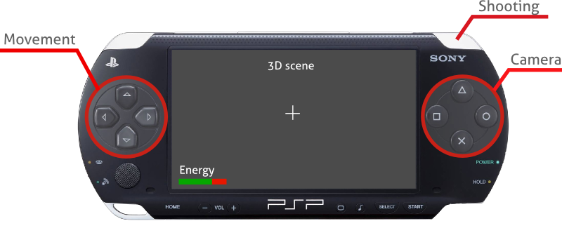
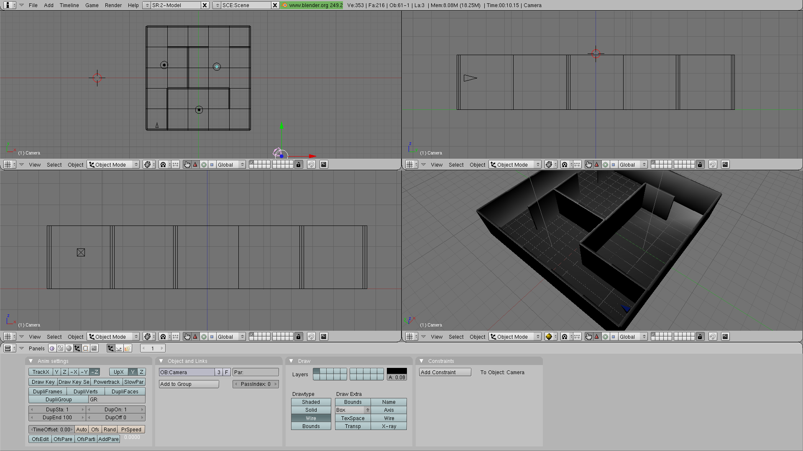
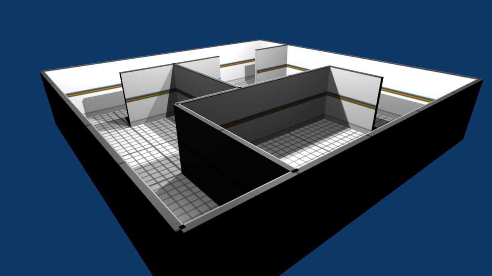
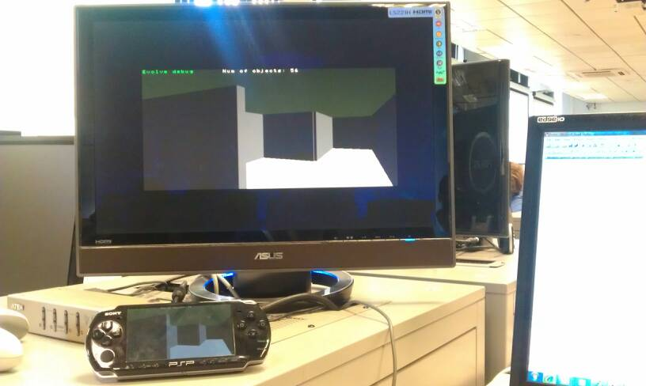

Yesterday I had an in class demo at university of my PSP First Person Shooter prototype, Evolve. The professor was impressed with the software engineering behind the system so, apparently, it went quite well although the project is in a very early stage of development. As always, I was in the games lab (it’s becoming my second home), so I recorded a video of the demo to keep track of the process.
Just a quick update, you really should spend a few minutes watching this presentation. Johan Andersson, Rendering architech at DICE, gave a talk called “Shiny PC graphics in Battlefield 3” during the last nVidia GeForce LAN. It’s focused on the latest improvements the Frostbite 2 engine includes and I think it’s a pretty good example of where the graphics technology is going.
I"m developing a first person shooter for PSP using the official and super confidential SDK for the Advanced Games Programming module. The deadline is settled in the middle of the semester, so that roughly gives me a couple of months which means a lot of hard work lies ahead, taking into account that it’s a completely new technology for me. The baby’s still a fetus, so in this post I"ll explain what am I trying to do and show some first screens.
The concept
Extracted from the game proposal document:
The player controls a regular human who is the subject of a series of experiments against his will. These experiments take place in a secret military lab. The scientists make him fight against some sort of supernatural creatures in a indoor facility.
The scientists are experimenting on a special drug that accelerates the mutation process from generation to generation, this is: evolution. That means that different sets of creatures will have different properties and will evolve depending on the player performance achieving a strong variety of situations. Genetic algorithms will be used to simulate the evolution effect.
The player will have to survive killing all the creatures encountered in the different rooms of the facility using a simple gun provided by the scientists.

Work in progress
After a lot of work and debugging, which is considerably harder in a console system, I have managed to get my level loading system working. It’s now possible to design levels in Blender and export them so my engine can load them in running time. The approach is similar to what I already did in Sion Tower. This is great because it boosts the design workflow, note that it’s not necessary anymore to build the project each time you make a little change in a certain level.

The pictures above and below illustrates the level creation process. Not having enough time to create the assets and being working with a limited device is going to result in simple and modest graphics but I hope the outcome will be satisfactory. Of course, this is a huge excuse for being a crappy artist!

To test the game it’s necessary to be in the games lab, where they have the PSPs development version consoles. The facility is great, the only problem is that sometimes it gets rather noisy… As you can see in the picture I’ve managed to load a level designed in Blender but without textures, unfortunately I"m struggling again with 3D format exporting, what a nightmare!

I"ll keep you posted about the development process fellow readers!
Life in Kingston goes on and it’s time to get some work done. Hope Caton, who was the plot writer in Tomb Raider IV and currently works as a teacher here at Kingston University, is organizing InKUbator. It’s a extra-curricular activity in which students can team up with the only goal of developing a great game. More on that in the following paragraphs.
InKUbator comes with extra sweetness since guest speakers from the games industry are coming. If this wasn’t enough, students who join InKUbator might get free tickets for industry conferences in BAFTA. It’s all about boosting our portfolios, making connections, working as a team, getting to know the market, challenging our abilities and testing our creativity.
We gather weekly and, although it’s been roughly two weeks, I"m already excited about the direction my project is taking. It’s too soon to talk what we"re working on, however I promise I"ll post details about it as soon as possible. I"m really focused in making the most of this experience, which I couldn’t have access to if I wasn’t in the UK as an Erasmus student.